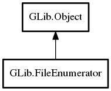

FileEnumerator
Object Hierarchy:
Description:
FileEnumerator allows you to operate on a set of Files, returning a FileInfo structure for each file enumerated (e.
g. enumerate_children will return a FileEnumerator for each of the children within a directory).
To get the next file's information from a FileEnumerator, use next_file or its asynchronous version, next_files_async. Note that the asynchronous version will return a list of FileInfos, whereas the synchronous will only return the next file in the enumerator.
The ordering of returned files is unspecified for non-Unix platforms; for more information, see read_name. On Unix, when operating on local files, returned files will be sorted by inode number. Effectively you can assume that the ordering of returned files will be stable between successive calls (and applications) assuming the directory is unchanged.
If your application needs a specific ordering, such as by name or modification time, you will have to implement that in your application code.
To close a FileEnumerator, use close, or its asynchronous version, close_async. Once a FileEnumerator is closed, no further actions may be performed on it, and it should be freed with unref.
Namespace: GLib
Package: gio-2.0
Content:
Properties:
Creation methods:
Methods:
Inherited Members:
All known members inherited from class GLib.Object